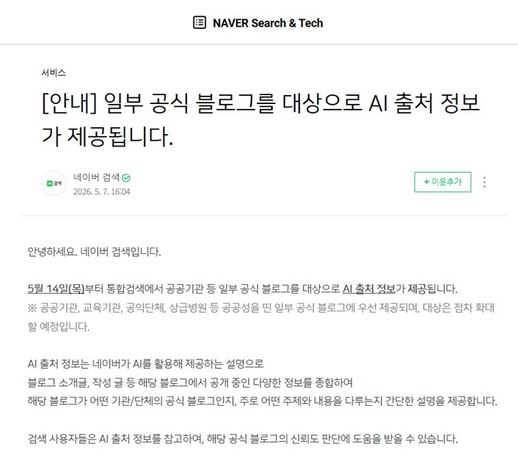
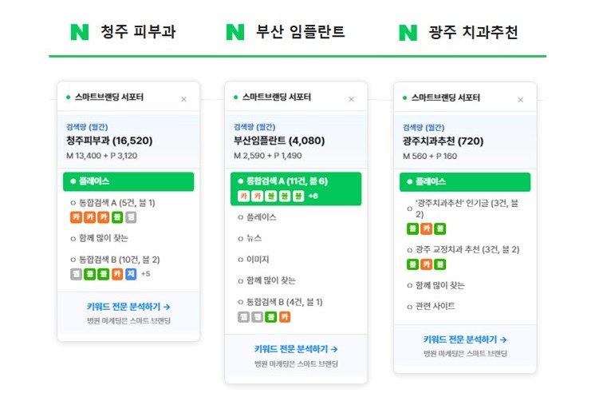

스마트브랜딩 · 2026.05
병원 브랜딩 블로그 운영 전략 방안 보고서
5월 14일부터 통합검색에서 일부 공식 블로그를 대상으로 AI 출처 정보가 제공됩니다.
— 네이버 검색 공식 블로그
대상은 점차 확대할 예정입니다.
네이버 AI가 블로그 소개글·발행 글을 종합 분석해, 그 채널이 어떤 기관·단체의 공식 채널인지를 검색 결과에 직접 표기하기 시작했습니다. 검색이 글을 평가하기 전에, 채널 자체를 먼저 평가하는 시대로 진입한 것입니다.

예전에는 네이버 계정의 '지수' + 로직에 맞는 글이 노출을 좌우했습니다.
지금은 세 가지가 함께 작용합니다 —
잘 쓴 글 + 신뢰할 수 있는 출처 + 사람들의 검색 패턴 (NEW).
네이버 계정의 '지수' + 로직에 맞는 글
잘 쓴 글 + 신뢰할 수 있는 출처
+ 사람들의 검색 패턴 (NEW)
그 결과, 같은 병원 콘텐츠라도 키워드마다 진입 가능한 자리 수가 달라졌습니다.
이제는 키워드마다 전략이 달라야 합니다.
병원의 핵심 키워드를 하나씩 검색해, 결과 화면이 어떤 영역에 속하는지 분류합니다.
검색 결과 양식 : 스마트블록, 플레이스, 신스마트블록, AI 브리핑 등
그 다음 상위 5~8개 결과의 분포(블로그·카페·지식인·웹문서)를 분석해 검색자가 정보(치료법·비용)를 원하는지, 장소(지역+업종)를 원하는지 판별합니다.
그에 맞춰 콘텐츠 타입을 정합니다 —
정보형은 전문가 블로그로, 장소형은 플레이스와 후기 채널로.
마지막으로 전문가 블로그가 진입 가능한 자리 수를 확인해 우선순위를 매깁니다.
네이버 AI는 글의 품질보다 채널을 먼저 평가합니다.
5월 14일 시작된 AI 출처 정보 표기가 그 첫 신호입니다.
인정받는 채널의 조건은 네 가지입니다.
이 다섯 가지가 갖춰져야 글의 품질이 비로소 평가됩니다.
네이버 검색 로직 변화에 대응하기 위해, 검색 패턴과 상위 노출 흐름을 자동 분석하는 도구를 자체 개발해 운용하고 있습니다.
키워드별 검색 결과 영역, 상위 분포 변화, 진입 자리 수의 변동을 실시간 추적하고, 신규 키워드의 진입 가능성도 자동 판정합니다.

네이버 검색 변화는 언제나 진행 중이고,
저희는 그 변화를 한 발 빠르게 추적해 대응하고 있습니다.
앞으로도 키워드 전략부터 원고 작성·발행까지 계속 보고드리겠습니다.
네이버 5월 로직 분석 상세 보고서 바로가기